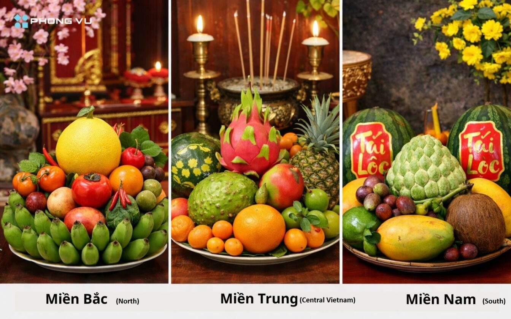
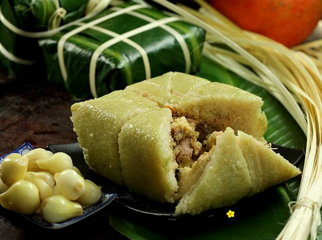
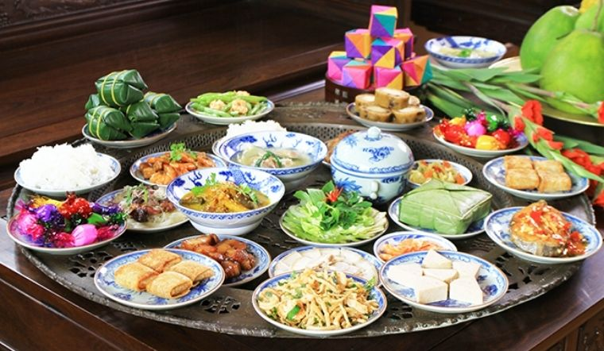
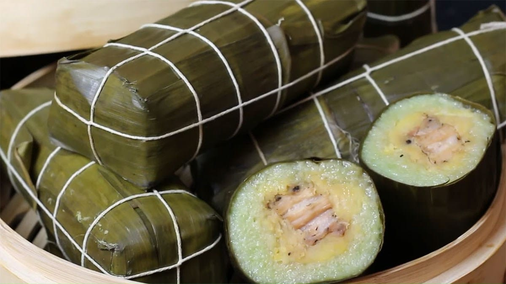
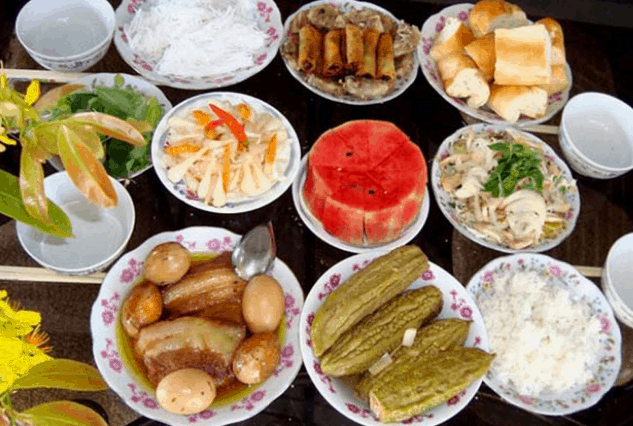

Traditional Food in Lunar New Year
Traditional Vietnamese Food during Tet
Food plays an important role in Tết celebrations, with each region of Vietnam offering a different menu that symbolizes prosperity, health, and happiness. It is an essential part of this holiday that not only serves a nutritious purpose but also carries a deep meaning in relation to wishes of good luck into the new year. Vietnamese food during Tet is rich, diverse, and reflects the unique characteristics of each region.

The "mam ngu qua" (five-fruit tray) is a sacred offering to ancestors. Its composition varies by region: - In the North, it follows the Five Elements (Metal, Wood, Water, Fire, Earth) and includes bananas, pomelos, Buddha’s hand fruit, figs, and persimmons. - In the Central region, it often includes custard apples, coconuts, figs, papayas, and mangoes. In the Central region, the five-fruit tray does not follow strict rules. It often reflects simplicity and practicality, using fruits that are available and suitable for the local climate. - In the South, the selection is guided by a phrase meaning prosperity: “Cau (sugar apple or cherimoya), Sung (fig), Dua (coconut), Du (papaya), Xai (mango)”. These fruits form a traditional Southern Vietnamese phrase that sounds like a wish for ‘enough to live comfortably and spend freely,’ symbolizing prosperity and abundance in the New Year.

Northern Vietnam
In the North, the most prominent dish during Tet is Banh Chung – a square cake of sticky rice wrapped in banana leaves. This dish is a symbol of the earth and is made to pay homage to the ancestors. The North also enjoys dishes such as Dua Hanh (pickled onions), which balances the richness of Banh Chung, and Xoi (glutinous rice) often served with pork sausages.


>South Vietnam
In the South, Banh Tet is a cylindrical rice cake that is most often topped with spicy pork or figs and green beans, representing the harmony of earth and heaven. This signature dish reflects the refined culinary traditions of the country’s regions. It tends to be smaller than northern cake, but it is no less important for Tết celebrations. The South is known for its rich and healthy food during the Tet festival. Thịt Kho Tàu (braised pork with egg) is a popular dish that symbolizes abundance and harmony. Another popular Southern food is Canh Kho Qua (stuffed bitter melon soup) which is served for good luck for a long life and empowerment away from bad luck. Southern families also enjoy fresh fruits such as kumquats, oranges, and pomelos.


Candied Fruits and Seeds
No Tet celebration is complete without Mut – the colorful candied fruits, vegetables, and seeds displayed in decorative boxes and offered to guests. The variety of Mứt available is staggering. You’ll find:
- Mut gung (candied ginger)
- Mut dừa (candied coconut)
- Mut sen (candied lotus seeds)
- Mut ca chua (candied cherry tomatoes)
- Mut bi (candied winter melon)
- Mut mo (candied apricots)
These sweet treats aren’t just snacks – they’re conversation starters. When guests visit during Tet, you offer them Mứt along with tea, and everyone samples different varieties while catching up on life.